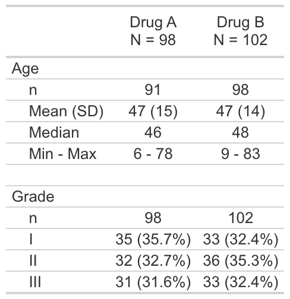

The {crane} package provides supplementary functions to the {gtsummary} specifically for trial reporting in the pharmaceutical industry.
Installation
You can install {crane} with the following code.
install.packages("crane")Install the development version with pak::pak("insightsengineering/crane")
Example
This is a basic example which shows you how to solve a common problem:
library(crane)
#> Loading required package: gtsummary
theme_gtsummary_roche()
#> Setting theme "Roche"
tbl <- trial |>
tbl_roche_summary(by = trt, include = c(age, grade), nonmissing = "always") |>
add_blank_row()